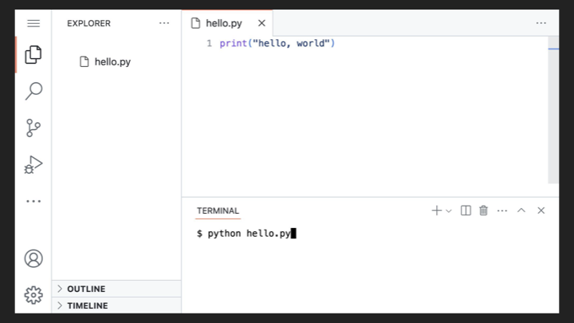
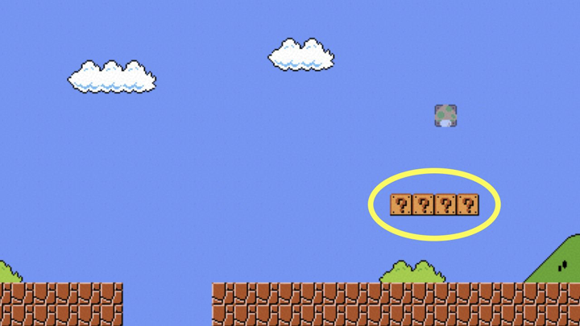
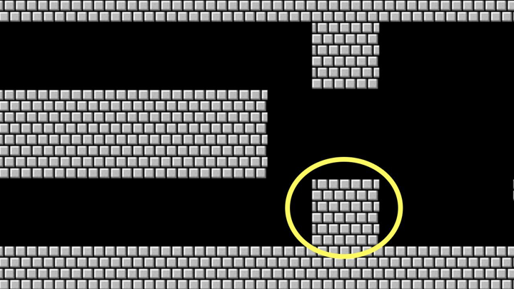

Lecture 3
- Welcome!
- Source Code and Machine Code
- Compilers and Interpreters
- Python
- Visual Studio Code
- Variables and Print
- Strings
- Integers and Floats
- Functions
- Conditionals
- Loops
- Lists
- Dictionaries
- Mario
- Libraries
- APIs
- Summing Up
Welcome!
- In our previous sessions, we learned about the fundamentals of computing, from binary and data representation to algorithms and data structures.
- Today, we are going to transition from discussing these conceptual building blocks to actually practicing programming.
- This lecture is a crash course in Python specifically, but programming more generally.
- Python is incredibly popular nowadays for data science, for websites, and so much more. It is representative of quite a few languages out there.
- By the end of this lecture, you will have learned the basics of programming, from variables and functions to conditionals, loops, and libraries.
Source Code and Machine Code
- When programmers write code, they write what is called source code.
- Source code is the code that you and I, the humans, write. It tends to be somewhat English-like, using keywords and phrases that are at least reminiscent of human language.
- Computers, however, do not understand English or even source code directly. Computers only understand zeros and ones.
- Machine code is the zeros and ones that computers actually understand. It is the language of the machine.
- The challenge, therefore, is how to get from source code to machine code, from the human-readable to the machine-readable.
Compilers and Interpreters
- A compiler is a program that translates source code into machine code all at once, before the program runs.
- When you compile a program, the compiler reads all of your source code and converts it into machine code that can then be executed by the computer.
- An interpreter, by contrast, translates source code into machine code line by line, as the program runs.
- With an interpreter, you can run your program immediately without a separate compilation step. The interpreter reads each line of code and executes it on the fly.
- Different programming languages use different approaches. Some languages, like C, are typically compiled. Others, like Python, are typically interpreted.
- The practical difference is that with a compiled language, you must compile your code before running it. With an interpreted language, you can run your code directly.
Python
- Python is a popular programming language that is interpreted rather than compiled.
- Python was designed to be relatively easy to read and write. Its syntax is cleaner and more English-like than many other languages.
- Python is widely used in the real world for web development, data science, artificial intelligence, automation, and much more.
- Because Python is interpreted, you can write a program and run it immediately without needing to compile it first.
- To run a Python program, you use the
pythoncommand followed by the name of your file, likepython hello.py.
Visual Studio Code
- Visual Studio Code, or VS Code, is a popular text editor used by programmers to write code.
- VS Code provides a code editor at the top of the screen where you write your source code, and a terminal at the bottom where you run commands.
- To create a new file in VS Code, you can type
code hello.pyat the terminal prompt, which opens a new file calledhello.py. - Once you have written your code, you can run it by typing
python hello.pyin the terminal. -
Consider the following screenshot of VS Code with a simple Python program:

Variables and Print
-
Let’s write our first Python program. In your text editor, create a file called
hello.pyand write code as follows:# Demonstrates a function with a positional argument print("hello, world")Notice that
printis a function that outputs text to the screen. The text inside the parentheses and quotes is what gets printed. - A function is a piece of code that performs a specific task. The
printfunction outputs whatever you give it to the screen. - The text
"hello, world"is called a string, which is just a sequence of characters. - To run this program, type
python hello.pyin your terminal and you will see the outputhello, world. -
What if we want to personalize this greeting? We can use the
inputfunction to ask the user for their name. Modify your code as follows:# Demonstrates a function with a positional argument and a return value name = input("What's your name? ") print("hello,") print(name)Notice that
inputis a function that prompts the user and waits for them to type something. Whatever they type gets stored in a variable calledname. - A variable is simply a container for a value. In this case,
nameholds whatever the user types. - The output here will be on two separate lines because each
printcall ends with a new line by default. -
We can combine the greeting onto one line using string concatenation:
# Demonstrates concatenation of strings name = input("What's your name? ") print("hello, " + name)Notice how the
+operator joins two strings together into one. -
Alternatively, Python allows you to pass multiple arguments to
print:# Demonstrates a function with two positional arguments name = input("What's your name? ") print("hello,", name)Notice that when you pass multiple arguments to
print, it automatically puts a space between them. -
The cleanest approach in Python is to use what is called an f-string or format string:
# Demonstrates a format string name = input("What's your name? ") print(f"hello, {name}")Notice the
fbefore the opening quote. This tells Python that this is a format string. The curly braces{name}get replaced with the value of the variablename. - F-strings are a powerful and readable way to embed variables directly inside strings.
Strings
- A string is a data type that represents text, a sequence of characters.
-
Python provides many useful functions for working with strings. For example, you can clean up user input:
# Demonstrates str functions name = input("What's your name? ").strip().title() print(f"hello, {name}")Notice that
.strip()removes any extra whitespace from the beginning and end of the input, and.title()capitalizes the first letter of each word. -
You can also split a string into parts:
# Demonstrates str functions name = input("What's your name? ").strip().title() first, last = name.split(" ") print(f"hello, {first}")Notice that
.split(" ")divides the string at each space, and we use unpacking to assign the first part tofirstand the second tolast.
Integers and Floats
- In Python, there are different data types for different kinds of values.
- An integer, or
int, is a whole number like 1, 2, or 42. - A float is a number with a decimal point, like 3.14 or 2.5.
-
Let’s write a simple calculator. Create a file called
calculator.py:# Demonstrates addition x = 1 y = 2 z = x + y print(z)Notice that we assign values to variables
xandy, add them together, and store the result inz. -
Now let’s make this interactive by asking the user for numbers:
# Demonstrates (unintended) concatenation of strings # Prompt user for two integers x = input("What's x? ") y = input("What's y? ") # Print sum z = x + y print(z)Notice that if you type 1 and 2, the output will be
12, not3. Why? Becauseinputalways returns a string, and the+operator concatenates strings. -
To fix this, we need to convert the strings to integers:
# Demonstrates conversion from str to int x = input("What's x? ") y = input("What's y? ") z = int(x) + int(y) print(z)Notice that
int()converts a string to an integer. Now the program correctly adds the numbers. -
We can make this more concise by nesting the function calls:
# Demonstrates nesting of function calls x = int(input("What's x? ")) y = int(input("What's y? ")) z = x + y print(z)Notice how
int()wraps aroundinput(), converting the result immediately. -
If we want to work with decimal numbers, we use
floatinstead ofint:# Demonstrates conversion of str to float x = float(input("What's x? ")) y = float(input("What's y? ")) z = x + y print(z)Notice that
float()converts a string to a floating-point number. -
Python provides a
roundfunction to round numbers:# Demonstrates rounding to nearest int x = float(input("What's x? ")) y = float(input("What's y? ")) z = round(x + y) print(z)Notice that
round()rounds to the nearest integer. -
For division, we can round to a specific number of decimal places:
# Demonstrates rounding after the decimal point x = float(input("What's x? ")) y = float(input("What's y? ")) z = round(x / y, 2) print(z)Notice that the second argument to
round()specifies how many decimal places to keep. -
You can also format numbers with commas for readability:
# Demonstrates formatting with commas x = float(input("What's x? ")) y = float(input("What's y? ")) z = round(x + y) print(f"{z:,}")Notice that
:,inside the f-string formats the number with comma separators (like 1,000,000).
Functions
- We have been using built-in functions like
printandinput. You can also define your own functions. -
A function is defined using the
defkeyword:# Demonstrates defining a function without parameters def hello(): print("hello") name = input("What's your name? ") hello() print(name)Notice that
def hello():defines a function namedhello. The indented code beneath it is the function’s body, which is what runs when the function is called. -
Functions can take parameters, which are inputs to the function:
# Demonstrates defining a function with a parameter def hello(to): print("hello,", to) name = input("What's your name? ") hello(name)Notice that
tois a parameter. When we callhello(name), the value ofnameis passed to the function asto. -
You can give parameters default values:
# Demonstrates defining a function with a parameter with a default value def hello(to="world"): print("hello,", to) hello() name = input("What's your name? ") hello(name)Notice that
to="world"sets a default value. If you callhello()with no argument, it uses “world”. If you pass an argument, it uses that instead. -
It is good practice to organize your code using a
mainfunction:# Demonstrates defining a main function def main(): name = input("What's your name? ") hello(name) def hello(to="world"): print("hello,", to) main()Notice that we define a
mainfunction that contains the main logic of our program. At the bottom, we callmain()to start the program. This keeps our code organized and readable.
Conditionals
- Conditionals allow your program to make decisions based on certain conditions.
- In Python, we use
if,elif(else if), andelseto create conditional logic. -
Let’s write a program that compares two numbers:
# Demonstrates conditionals x = int(input("What's x? ")) y = int(input("What's y? ")) if x < y: print("x is less than y") if x > y: print("x is greater than y") if x == y: print("x is equal to y")Notice that we use
<for less than,>for greater than, and==for equal to (not a single=, which is for assignment). -
This code works, but it checks all three conditions even when only one can be true. We can improve this using
elif:# Demonstrates mutually exclusive conditions x = int(input("What's x? ")) y = int(input("What's y? ")) if x < y: print("x is less than y") elif x > y: print("x is greater than y") elif x == y: print("x is equal to y")Notice that
elifmeans “else if”. Once one condition is true, the rest are skipped. -
Since x can only be less than, greater than, or equal to y, we can simplify further:
# Demonstrates fewer conditions x = int(input("What's x? ")) y = int(input("What's y? ")) if x < y: print("x is less than y") elif x > y: print("x is greater than y") else: print("x is equal to y")Notice that
elsecatches everything else that was not caught by the previous conditions. -
You can also combine conditions using logical operators like
orandand:# Demonstrates inequalities and logical operator x = int(input("What's x? ")) y = int(input("What's y? ")) if x < y or x > y: print("x is not equal to y") else: print("x is equal to y")Notice that
ormeans either condition can be true. -
Let’s write a program that asks for user agreement:
# Compares strings answer = input("Do you agree? ") if answer == "yes": print("Agreed") else: print("Not agreed")Notice that we can compare strings just like numbers.
-
We should handle variations in user input. What if they type “YES” or “ yes “?
# Lowercases string before comparing answer = input("Do you agree? ").strip().lower() if answer == "yes": print("Agreed") else: print("Not agreed")Notice that
.lower()converts the input to lowercase, making our comparison case-insensitive. -
We can accept multiple valid responses:
# Compares multiple strings answer = input("Do you agree? ").strip().lower() if answer == "yes" or answer == "y": print("Agreed") else: print("Not agreed")Notice that we use
orto accept either “yes” or “y” as valid agreement.
Loops
- Loops allow you to repeat actions multiple times.
-
Let’s say we want to print “meow” three times. The simplest approach:
# Demonstrates multiple (identical) function calls print("meow") print("meow") print("meow")Notice that this works, but copy-pasting is tedious and error-prone.
-
A while loop repeats as long as a condition is true:
# Demonstrates a while loop, counting down i = 3 while i != 0: print("meow") i = i - 1Notice that we start with
i = 3and count down. The loop continues whilei != 0. Each iteration, we subtract 1 fromi. -
We can also count up:
# Demonstrates a while loop, counting up from 0 i = 0 while i < 3: print("meow") i = i + 1Notice that we start at 0 and continue while
i < 3. This is a common pattern in programming: starting from 0 and counting up. -
Python offers a shorthand for incrementing:
# Demonstrates (more succinct) incrementation i = 0 while i < 3: print("meow") i += 1Notice that
i += 1is equivalent toi = i + 1. -
A for loop is often cleaner for iterating a specific number of times:
# Demonstrates a for loop, using a list for i in [0, 1, 2]: print("meow")Notice that the for loop iterates over each value in the list
[0, 1, 2]. -
Python’s
rangefunction generates a sequence of numbers:# Demonstrates a for loop, using range for i in range(3): print("meow")Notice that
range(3)generates the numbers 0, 1, and 2. This is cleaner and more scalable than typing out a list.
Lists
- A list is a collection of values stored in a single variable.
-
Lists are created using square brackets:
# Demonstrates indexing into a list schools = ["Harvard", "MIT", "Oxford"] print(schools[0]) print(schools[1]) print(schools[2])Notice that we access individual items using their index, starting from 0. So
schools[0]is “Harvard”,schools[1]is “MIT”, andschools[2]is “Oxford”. -
You can iterate over a list with a for loop:
# Demonstrates iterating over a list schools = ["Harvard", "MIT", "Oxford"] for school in schools: print(school)Notice that
for school in schoolsassigns each item toschoolin turn, then executes the loop body.
Dictionaries
- A dictionary is a collection of key-value pairs.
- Unlike lists that use numeric indices, dictionaries let you use any key to look up values.
-
Dictionaries are created using curly braces:
# Demonstrates indexing into a dict schools = { "Harvard": "Cambridge", "MIT": "Cambridge", "Oxford": "Oxford", } print(schools["Harvard"]) print(schools["MIT"]) print(schools["Oxford"])Notice that each key (like “Harvard”) is paired with a value (like “Cambridge”) using a colon. We access values using
schools["Harvard"]. -
You can iterate over a dictionary:
# Demonstrates indexing into a dict schools = { "Harvard": "Cambridge", "MIT": "Cambridge", "Oxford": "Oxford", } for school in schools: print(school, schools[school], sep=" is in ")Notice that iterating over a dictionary gives you the keys. We use
schools[school]to get the corresponding value. Thesepparameter changes what separates the printed values.
Mario
- Let’s translate our building blocks to a real-world problem: the game of Super Mario Bros.
-
Consider the brick columns in the game. Using ASCII art, we can represent a column of bricks:
-
The simplest approach to print three bricks:
# Prints a column of bricks print("#") print("#") print("#")Notice that this works but involves repetition.
-
Using a loop is cleaner:
# Prints column of bricks using a loop for _ in range(3): print("#")Notice that
_is a conventional name for a variable we do not actually use. We just want to repeat the action three times. -
Consider the question mark blocks arranged horizontally:

-
Python allows string multiplication:
# Prints row of coins using str multiplication print("?" * 4)Notice that
"?" * 4produces????. String multiplication repeats the string. -
Now consider a two-dimensional grid of bricks:

-
We need nested loops to create a grid:
# Prints grid of bricks using nested loops for i in range(3): for j in range(3): print("#", end="") print()Notice that the outer loop handles rows and the inner loop handles columns. The
end=""preventsprintfrom adding a newline, andprint()adds a newline after each row. -
We can decompose this problem using functions:
# Prints grid of bricks using a function with a loop and str multiplication def main(): for _ in range(3): print_row(3) def print_row(width): print("#" * width) main()Notice how we define a
print_rowfunction that handles printing a single row. The main function just calls it three times. This is hierarchical decomposition: breaking a large problem into smaller, more manageable pieces.
Libraries
- Libraries are collections of code written by others that you can use in your own programs.
- There is a wonderfully vibrant community of open source software, or OSS, which refers to source code that other people have written that you can use, read, and even modify.
-
Python comes with many built-in libraries. The
randomlibrary provides functions for generating random values:# Demonstrates import and random.choice import random coin = random.choice(["heads", "tails"]) print(coin)Notice that
import randombrings in the random library. Thenrandom.choice()picks a random item from the list. -
You can import specific functions:
# Demonstrates from from random import choice coin = choice(["heads", "tails"]) print(coin)Notice that
from random import choiceimports just thechoicefunction, so you can call it directly without therandom.prefix. -
The random library has other useful functions:
# Demonstrates randint import random number = random.randint(1, 10) print(number)Notice that
randint(1, 10)returns a random integer between 1 and 10, inclusive. -
You can shuffle a list:
# Demonstrates shuffle import random cards = ["jack", "queen", "king"] random.shuffle(cards) for card in cards: print(card)Notice that
shufflerandomizes the order of items in the list. -
The
statisticslibrary provides mathematical functions:# Demonstrates statistics import statistics print(statistics.mean([100, 90]))Notice that
statistics.mean()calculates the average of a list of numbers. -
The
syslibrary provides access to system-level functionality, including command-line arguments:# Demonstrates sys.argv import sys print("hello, my name is", sys.argv[1])Notice that
sys.argvis a list containing the words typed at the command line.sys.argv[0]is the script name,sys.argv[1]is the first argument. - Running
python name.py Davidwould print “hello, my name is David”. -
What if the user forgets to provide a name? We get an error. We can catch this exception:
# Demonstrates IndexError import sys try: print("hello, my name is", sys.argv[1]) except IndexError: print("Too few arguments")Notice that
tryattempts to execute code, andexceptcatches any IndexError that occurs. -
Alternatively, we can check the arguments beforehand:
# Adds error checking import sys if len(sys.argv) < 2: print("Too few arguments") elif len(sys.argv) > 2: print("Too many arguments") else: print("hello, my name is", sys.argv[1])Notice that
len(sys.argv)gives the number of command-line arguments. We check this to provide helpful error messages. -
Some libraries do not come with Python and must be installed. The
cowsaylibrary is a fun example:# Demonstrates pip-installed package import cowsay name = input("What's your name? ") cowsay.cow(f"hello, {name}")Notice that after installing with
pip install cowsay, you can use the library to have an ASCII cow say something. - Just because something is documented online or is free and open source does not mean the code is actually safe. In industry, you should hesitate before installing packages onto your systems without proper vetting.
APIs
- APIs, or Application Programming Interfaces, are standardized ways of talking to someone else’s system, providing input and getting output that you can incorporate into your own program.
-
Apple’s iTunes has an API that lets you search for music. The
requestslibrary lets us make web requests:# Demonstrates requests import sys import requests if len(sys.argv) != 2: sys.exit() response = requests.get( "https://itunes.apple.com/search?entity=song&limit=1&term=" + sys.argv[1] ) print(response.json())Notice that
requests.get()fetches data from a URL. Theresponse.json()method parses the JSON response. -
The
jsonlibrary helps format the response for readability:# Demonstrates json import json import sys import requests if len(sys.argv) != 2: sys.exit() response = requests.get( "https://itunes.apple.com/search?entity=song&limit=1&term=" + sys.argv[1] ) print(json.dumps(response.json(), indent=2))Notice that
json.dumps()withindent=2formats the output with nice indentation. -
We can extract specific information from the response:
# Demonstrates iterating over JSON import json import sys import requests if len(sys.argv) != 2: sys.exit() response = requests.get( "https://itunes.apple.com/search?entity=song&term=" + sys.argv[1] ) o = response.json() for result in o["results"]: print(result["trackName"])Notice that we access the
resultskey and iterate over the songs, printing each track name. - There are many other third-party libraries that provide powerful capabilities:
-
Face recognition libraries can detect and identify faces in images:
# Find faces in picture # https://github.com/ageitgey/face_recognition/blob/master/examples/find_faces_in_picture.py from PIL import Image import face_recognition image = face_recognition.load_image_file("office.jpg") face_locations = face_recognition.face_locations(image) for face_location in face_locations: top, right, bottom, left = face_location face_image = image[top:bottom, left:right] pil_image = Image.fromarray(face_image) pil_image.show()Notice that this library can find all faces in an image and extract them individually.
-
Text-to-speech libraries can synthesize speech:
# Says hello import pyttsx3 engine = pyttsx3.init() engine.say("hello, world") engine.runAndWait()Notice that this library initializes a speech engine and speaks the given text aloud.
-
Speech recognition libraries can understand spoken words:
# Recognizes a voice # https://pypi.org/project/SpeechRecognition/ import speech_recognition # Obtain audio from the microphone recognizer = speech_recognition.Recognizer() with speech_recognition.Microphone() as source: print("Say something:") audio = recognizer.listen(source) # Recognize speech using Google Speech Recognition print("You said:") print(recognizer.recognize_google(audio))Notice that this library listens through the microphone and converts speech to text using Google’s speech recognition.
-
You can combine these capabilities to create voice assistants:
# Responds to a greeting # https://pypi.org/project/SpeechRecognition/ import speech_recognition # Obtain audio from the microphone recognizer = speech_recognition.Recognizer() with speech_recognition.Microphone() as source: print("Say something:") audio = recognizer.listen(source) # Recognize speech using Google Speech Recognition words = recognizer.recognize_google(audio) # Respond to speech if "hello" in words: print("Hello to you too!") elif "how are you" in words: print("I am well, thanks!") elif "goodbye" in words: print("Goodbye to you too!") else: print("Huh?")Notice how we combine speech recognition with conditionals to respond to different phrases.
-
Using regular expressions, you can extract specific information from speech:
# Responds to a name # https://pypi.org/project/SpeechRecognition/ import re import speech_recognition # Obtain audio from the microphone recognizer = speech_recognition.Recognizer() with speech_recognition.Microphone() as source: print("Say something:") audio = recognizer.listen(source) # Recognize speech using Google Speech Recognition words = recognizer.recognize_google(audio) # Respond to speech matches = re.search("my name is (.*)", words) if matches: print(f"Hey, {matches[1]}.") else: print("Hey, you.")Notice that the regular expression
my name is (.*)captures whatever comes after “my name is” and stores it inmatches[1].
Summing Up
In this lesson, you learned the fundamentals of programming through Python. Specifically, you learned…
- About source code and machine code, and how they differ.
- The difference between compilers and interpreters.
- How to write Python programs using Visual Studio Code.
- How to use variables to store values.
- About data types including strings, integers, and floats.
- How to use the print and input functions.
- How to use f-strings to format output.
- How to use conditionals to make decisions.
- How to define your own functions.
- How to use loops to repeat actions.
- How to use lists and dictionaries to store collections of data.
- How to use libraries to extend Python’s capabilities.
- How to use APIs to interact with external services.
See you next time!